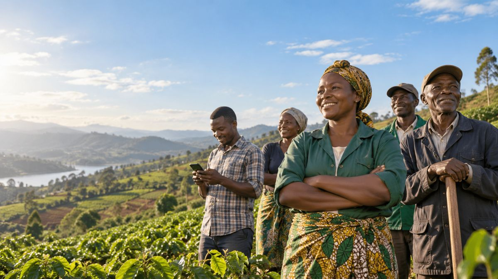
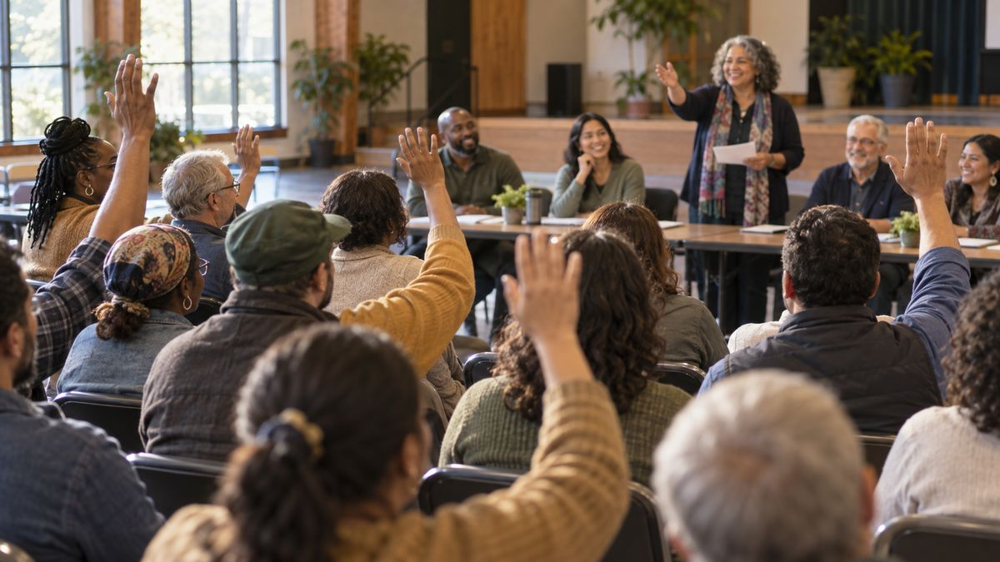

Built by a cooperative. Built for cooperatives.
Your cooperative.
Connected to more.
FORUS is the digital infrastructure for the cooperative economy: one platform that helps cooperatives connect their people, coordinate activity, build capability and participate in more opportunity as they grow.
The power of cooperation
When people work together, more becomes possible.
Cooperatives already bring people, skills and resources together. FORUS brings that collective strength into one connected digital environment, so it is easier to organise, communicate, learn and grow.
Not another software platform to rent. Infrastructure built around the cooperative model itself.
- Start with the essentials.
- Add more as your cooperative develops.
- Stay connected to a wider cooperative network.

What FORUS makes possible
One place to start. More ways to grow.
One platform. Many capabilities. FORUS is designed around the journey of a cooperative, not around a list of software products.
- Connect your people
A shared digital home for your cooperative.
Create a shared digital home for your cooperative and give members a clearer way to stay connected and take part.
- Build capability
Learning that strengthens how you work.
Support leaders and members with learning and development that strengthens how the cooperative works.
- Create opportunity
More connected ways to organise and trade.
As FORUS services expand, cooperatives can move toward more connected ways to organise, trade, get paid and participate in shared economic opportunities.
- Grow together
Part of a broader cooperative ecosystem.
Connect to a broader ecosystem designed around cooperation, partnerships and shared value.
How it works
Simple to begin. Built to grow with you.
- 01
Register your cooperative
Tell us about your cooperative and its primary contact.
- 02
Set up and connect
Once approved, FORUS guides you through secure setup and the services available to your cooperative.
- 03
Grow into more
Start with what is relevant now and explore additional capabilities as your needs and the FORUS ecosystem develop.
Real cooperative economies
Different cooperatives. Shared infrastructure.


Agriculture Transport Retail Services Community Networks
Shared infrastructure for shared ownership. Different cooperatives have different needs. FORUS is being built as shared digital infrastructure that can support many kinds of cooperative activity without forcing every cooperative into the same model.

The network effect
More than software. A connected cooperative network.
FORUS is designed to help individual cooperatives connect to a wider ecosystem of learning, services, trade and partnerships as those capabilities become available.
The aim is simple: make cooperation easier to coordinate and shared opportunity easier to reach.
Cooperative by design
Technology should strengthen the cooperative, not replace it.
FORUS is built by a cooperative, for cooperatives, around the realities of cooperative participation: people need to belong, understand, contribute and grow together.
A cooperative on FORUS is not a customer renting another software platform. It is part of shared infrastructure designed to strengthen cooperative ownership, participation and collective value.
Participation
Make it easier for members to stay connected and involved.
Capability
Help people learn, develop and contribute with confidence.
Shared opportunity
Create pathways for cooperatives to do more together.
Trust
Use clear identity, secure access and responsible service activation.
Proof and momentum
Built through partnership. Growing through cooperation.
FORUS works with cooperative organisations, sector partners and institutions that already understand the communities they serve.
Follow the latest partnerships, cooperative stories and progress from across the FORUS network.
Ready to connect your cooperative?
Register your cooperative and take your place in the digital infrastructure for the cooperative economy. FORUS will guide you through the next steps and the services available to you.